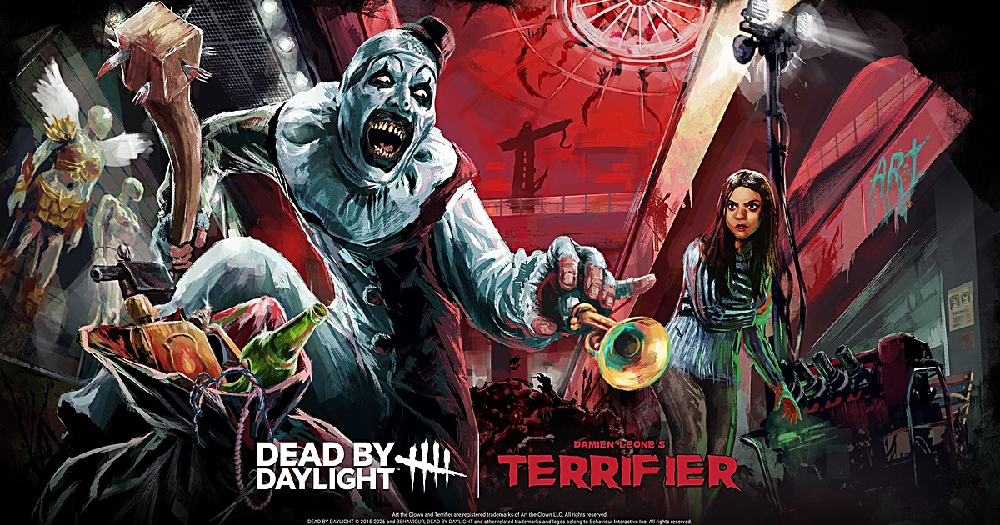

Art the Clown is in Dead by Daylight now — and he brought a flamethrower, a flail, and a bike horn
Dead by Daylight's Terrifier chapter went live Tuesday, putting Art the Clown in The Fog as a playable Killer with a trash bag full of random weapons, Sienna Shaw as the new Survivor, and a free mall map that has been one of the community's most-requested additions for years.

---
Disclosure: this post contains affiliate links. I earn a commission on qualifying purchases.
Art the Clown is officially in Dead by Daylight. Behaviour Interactive flipped the switch on the Terrifier chapter on Tuesday, November 24, bringing the silent killer from Damien Leone's Terrifier films into The Fog as a playable Killer — alongside Sienna Shaw as a new Survivor and a brand-new map that costs nobody anything.
The chapter is the game's final big licensed drop of 2026, and it lands with a gimmick that fits the character perfectly: Art doesn't pick a weapon. He reaches into a trash bag and takes whatever comes out.
The Bag of Toys
Art's power is called Bag of Toys. Hold the ability button and he pulls two weapons at random from a pool of five — a flail, a flamethrower, a firearm, a bottle full of acid, and a bike horn — then picks one to use. Each weapon is single-use, and each has its own Mini-Mori, the short execution animation that plays when Art finishes a Survivor with it.
That last detail is a record: with seven kill animations in total, Art arrives with more finishers than any Killer before him. The weapons also escalate — every successful hit with a toy makes it deadlier, eventually letting Art knock down injured Survivors and execute them.
His three perks lean into the same chaos. Funny Business gives him a speed boost plus a random extra effect whenever he damages a generator — the effects can be as helpful as blocking generators or as unserious as a burst of confetti. Kill Spree ends the trial in a massacre once every Survivor has reached two hook states and all generators are done. Laughingstock leaves Survivors near completed generators Exhausted and Oblivious.
Sienna Shaw, the Final Girl
Sienna Shaw, the Final Girl of the Terrifier films, joins as the new Survivor with three perks built around sacrifice and turning a chase around. Best Gift Ever lets her drop items to gain powerful passive abilities. Shared Trauma lets nearby Survivors recover from Exhausted while running whenever she takes a protection hit. Valkyrie's Rage turns a chase into a counterattack with an extra-powerful pallet stun.
The chapter costs $7.99 and also unlocks two exclusives: the Art Crispies Cereal charm and the Clown Cafe banner.
The mall is free — and it was the ask
The Hartshorne Mall, the chapter's new map, is free for every player whether they buy Art and Sienna or not. Behaviour has always kept maps free, and this one matters more than most: a mall map has been one of the community's most-requested additions for years, and this one is an original location built around liminal space — a once-busy family shopping center warped by the Entity into something eerie and off.
It opens a new realm called The Subdivisions, and it hides lore for longtime Survivor Dwight Fairfield, who had a traumatic encounter with The Entity after getting lost in the mall as a child.
The chapter also ships two systems changes that reach beyond Art: a reworked Mori structure that starts with him and will roll out to older Killers over time, plus new gore settings including softer death sequences and green blood.
The timing, and what left with it
The chapter was announced in June during the game's 10th-anniversary celebration, hit the public test build on October 28, and went live November 24 — the same day Behaviour pulled the Chucky chapter from stores at 11 a.m. ET. Licensed chapters can leave while owners keep them, so anyone who already owns Chucky keeps him; new buyers are out of luck.
Dead by Daylight has built its decade on horror icons, from Jason Voorhees to Freddy Krueger. Art is the modern one — a killer who debuted in a 2008 short, headlined his own films since 2016, and now gets to pick a flamethrower out of a trash bag in front of four people trying not to die. That is, somehow, exactly on brand for both sides of this crossover.
Sources: Dead by Daylight: Terrifier | Everything to Know (Behaviour Interactive) · Dead by Daylight: Terrifier (Xbox) · Dead by Daylight adds Terrifier's Art the Clown, who comes with a record seven kill animations (JoBlo) · Art the Clown Joins "Dead by Daylight" as Its Terrifier Chapter Goes Live (Rue Morgue)
Watch
Source: Dead by Daylight: Terrifier Chapter Trailer (Behaviour Interactive) — the official chapter trailer.
Gear up: Razer — mice, keyboards, headsets and laptops.